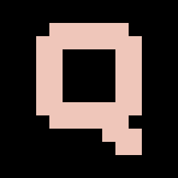

Confidentialité
QUARTZ — dernière mise à jour : 13 septembre 2026
Votre portefeuille reste sur votre machine. Ses positions, ses prix, son journal : rien de tout cela ne part. Trois choses seulement sortent, et cette page dit lesquelles, pourquoi, et combien de temps elles sont gardées.
Ce que la connexion Google transmet à QUARTZ
QUARTZ demande trois autorisations, et seulement celles-là :
openid, email, profile. Google lui
remet alors un jeton d'identité qui contient :
- votre identifiant de compte Google ;
- votre adresse e-mail ;
- votre nom d'affichage, s'il existe.
QUARTZ ne demande aucun accès à vos messages, vos fichiers, vos contacts ou votre agenda, et ne pourrait pas y accéder même s'il le voulait : ces autorisations ne lui ont pas été accordées.
Ce que QUARTZ en fait
Ces trois informations sont écrites dans un fichier local, sur votre ordinateur :
%LOCALAPPDATA%\QUARTZ\etat\sessions\
Elles servent à une seule chose : savoir à quel compte appartient le portefeuille affiché, pour que deux personnes qui utilisent le même ordinateur ne voient pas celui de l'autre.
Ce qui sort de votre machine
QUARTZ contacte quatre services :
- Google, au moment de la connexion, pour échanger le code d'autorisation contre le jeton d'identité — c'est vous qui vous connectez, comme sur n'importe quel site ;
- Supabase (Supabase Inc., hébergement dans l'Union européenne), qui tient la liste des accès et distribue les cibles du portefeuille. C'est le seul service qui reçoive des données vous concernant ; les deux paragraphes suivants disent exactement lesquelles ;
- Binance, pour relever les prix publics des marchés. Ces requêtes ne portent aucune information vous concernant ;
- GitHub, pour vérifier qu'une mise à jour existe et la télécharger. Ces requêtes ne portent aucune information vous concernant.
Votre accès
Pour savoir si votre accès est ouvert, QUARTZ conserve chez Supabase votre adresse e-mail, votre identifiant de compte Google, la date d'ouverture, la date du dernier appel, et le cas échéant le motif d'une suspension — celui-là même qui vous est affiché.
Si vous vous connectez alors que les inscriptions sont fermées, ou qu'il ne reste plus de place, votre adresse est tout de même enregistrée — sans quoi il serait impossible de vous rappeler pour vous ouvrir l'accès. Le programme vous le dit au moment du refus. Cet enregistrement repose sur l'intérêt légitime de pouvoir répondre aux personnes qui se présentent ; il est effacé automatiquement au bout de 90 jours si aucun accès n'a été ouvert entre-temps, et vous pouvez en demander l'effacement immédiat à l'adresse indiquée en bas de page.
Ce que la boucle rapporte
Quand un portefeuille de papier tourne, le programme envoie un signe de vie au plus quatre fois par heure. Ce signe contient, et rien d'autre :
- la valeur de votre portefeuille de papier (équité) et son exposition totale (brut) ;
- le nombre de tours effectués, et si la boucle est vivante ;
- la version du programme, l'âge des cibles en main, un identifiant d'installation tiré au hasard ;
- le motif d'un arrêt, et un message d'erreur tronqué à deux cents caractères, s'il y en a un.
Aucune position, aucun poids par marché, aucun prix. Ce relevé sert à savoir si le programme fonctionne chez ses utilisateurs. Mais c'est bien une donnée personnelle — la courbe de valeur d'un portefeuille, rattachée à une personne identifiée —, et c'est pourquoi elle est annoncée ici plutôt que laissée à découvrir. Elle est effacée automatiquement au bout de 90 jours.
Ce que QUARTZ ne fait pas
- Aucune donnée n'est vendue, louée ou partagée avec un tiers.
- Aucune publicité, aucun traceur, aucune mesure d'audience.
- Aucun profilage, aucune décision automatisée vous concernant.
- Aucune clé d'échange n'est demandée. Le portefeuille est de papier : aucun ordre n'est envoyé, aucun compte de courtage n'est touché.
Combien de temps
Les relevés de la boucle et les adresses enregistrées sans accès ouvert sont effacés au bout de 90 jours, automatiquement. Les décisions prises sur un accès — ouverture, suspension, retrait — sont gardées aussi longtemps que l'accès existe, parce qu'elles expliquent son état.
La session locale expire d'elle-même après sept jours sans usage. Vous
pouvez l'effacer immédiatement avec la commande /logout dans le
programme, ou en supprimant le dossier ci-dessus. Vous pouvez aussi retirer
l'accès de QUARTZ depuis
les autorisations de votre
compte Google — QUARTZ ne conserve rien chez Google qui survivrait à ce
retrait.
Vos droits
Ce qui est sur votre machine est sous votre main directe : les consulter, c'est ouvrir les fichiers ; les effacer, c'est les supprimer.
Pour ce qui est conservé chez Supabase — votre accès et les relevés de la boucle —, vous disposez des droits d'accès, de rectification, d'effacement, de limitation et de portabilité. Vous pouvez également vous opposer à l'enregistrement de votre adresse, puisqu'il repose sur l'intérêt légitime et non sur votre consentement. Écrivez à l'adresse ci-dessous : il n'y a pas de formulaire, il y a quelqu'un qui répond. Vous pouvez enfin saisir la CNIL si la réponse ne vous satisfait pas.